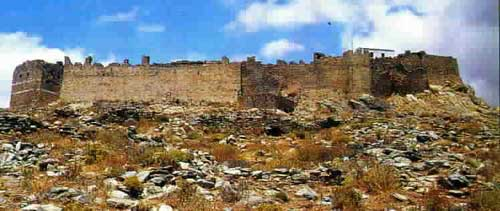

Το κάστρο της Καρύστου
 Γνωστό με την ονομασία Castel Rosso (Κόκκινο Κάστρο), λόγω του χρώματος των τειχών του, το κάστρο της Καρύστου θεωρείται τυπικό δείγμα φρουριακής κατασκευής της περιόδου των Σταυροφοριών στον ελληνικό χώρο. Μεγαλύτερο σε έκταση από την Ακρόπολη των Αθηνών, είχε τη φήμη του απόρθητου, και μάλιστα αναφέρεται ότι τριάντα άνδρες αρκούσαν για την άμυνά του. Το κάστρο ενισχύονταν από 13 πύργους. Στα χρόνια της τουρκοκρατίας υπολογίζεται ότι ζούσαν 400 τουρκικές οικογένειες στο εσωτερικό του, που περιελάμβανε τζαμί, σχολείο, αγορά, καφενείο και τα σπίτια των αγάδων. | ||